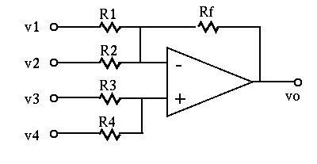
Express the output voltage 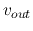 as a weighted sum of the four
input voltages
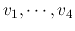:
Hint: Define
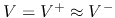, and apply KCL to 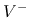 and 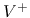
to get two equations. Solve one of them for  , substitute it into
the other equation, and then write as a function of all
four input voltages.
, substitute it into
the other equation, and then write as a function of all
four input voltages.
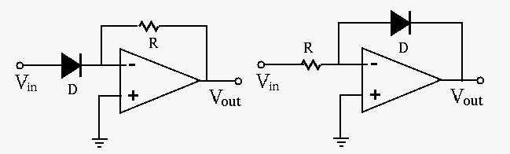
Show that the output voltages of the exponential amplifier
(left) and logarithmic amplifier (right) are approximately an exponential
and logarithmic function of the input voltage 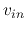, respectively:
Hint: recall the relationship between the current through and voltage across a diode and use the virtual ground assumption.
The circuit generates a constant current through the load, independent
of the load resistance  of the load. Give the expression of this
current 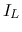 through
of the load. Give the expression of this
current 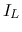 through  as a function of the inputs and
and the resistances in the circuit, and show it is independent of
as a function of the inputs and
and the resistances in the circuit, and show it is independent of  .
Assume
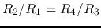.
.
Assume
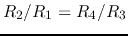.
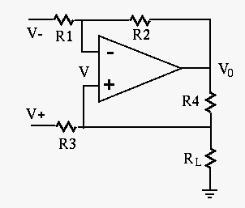